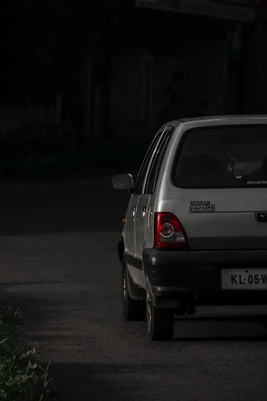

One of the earliest memories of any middle-class 90s kid is sitting in a Maruti Suzuki 800 car and having the
best day of their life. Back in those days, Maruti Suzuki played a huge role in making cars accessible to
everyone in India. The automobile company entered the market in 1981 and created history with its unique models
and service. Every house had a Maruti Suzuki car and the brand became the most-trusted automobile label in no
time.
Maruti Suzuki India is a subsidiary brand of Suzuki Motor Corporation, Japan. According to the reports dated
September 2020, the Japanese car company holds around 56.37% of the stakes in the company. A look at the share
price history of Maruti Suzuki, and you will see that the company has grown to be the largest passenger car
company in India. It accounts for over 50% of the domestic car market in the country. Let’s dig a little deep
and learn more about the Maruti Suzuki cars, the history of the automobile brand and its success in India.
The need for cars grew rapidly in the 80s and Maruti Suzuki cashed on this opportunity by launching the company
around the same time. The company started as a government commodity on 24 February 1981, with a mission to
manufacture cars for middle-class Indians. Its major competitors were two other government-controlled automobile
companies named Premier Automobiles Ltd (which had their popular car Premier Padmini) and Hindustan Motors Ltd
(which made the Ambassador cars).
Launched as Maruti Udyog Ltd., Suzuki was a minor partner in the company initially. The business model changed a
year later on 2 October 1982, when Maruti Udyog signed the license and a joint venture agreement with Suzuki
Motor Corporation. This was just the beginning of a long-lasting and successful partnership.
Soon after the agreement, Maruti Suzuki cars started its production in 1983. The first car that Maruti Suzuki
launched and created history with was the Maruti 800. The car was so affordable that it instantly became
popular. Even now, after so many years, you might spot this car on the Indian roads.

MARUTI SUZUKI FIRST CAR
In the 1980s, owning a car in India was considered a luxury. With just two options available, the Fiat and the
Ambassador, the idea of a new, modern car seemed far-fetched. However, a small, little car called the Maruti 800
arrived and changed the game. It revolutionized the automotive industry in India.
The Maruti 800 was ahead of its competitors in terms of technology. It was smaller, lighter, and easier to drive
and maintain. Additionally, it offered better mileage. When it was launched, it generated immense excitement
among people from all walks of life. It wasn't just for the rich or the poor; it became the car that everybody
wanted, from industrialists to senior executives. Owning a Maruti 800 became a status symbol.
This small car replaced the Bajaj scooter as the dream vehicle of the Indian middle class and paved the way for
other car companies that followed. Maruti, with its Japanese management and process systems, played a crucial
role in modernizing the local industrial landscape and making India.
When Maruti opened bookings on April 9, 1983, it immediately struck a chord with Indian buyers. Around 120,000
customers eagerly put down an advance of Rs 10,000 during the pre-launch phase. The waiting period for the car
was as long as three years for those at the bottom of the list. By June 8, just two months after bookings
opened, the orders had crossed a staggering 1.35 lakh units.
At its launch, the Maruti 800 cost Rs 52,500 in Delhi. Delivery of the cars began on December 14, 1983, which
coincided with Sanjay Gandhi's birth anniversary. The first 10 allottees, chosen through a transparent draw of
lots, received their keys from Prime Minister Indira Gandhi herself. The first car was handed over to Harpal
Singh, an Indian Airlines employee, who had sold his Fiat car to buy the Maruti 800. Singh became a part of
Indian automobile history, and his picture with the PM is still remembered today.
The Maruti 800 quickly became a favorite among the rich and the poor alike. Its dependability and ease of
maintenance, supported by Maruti's extensive dealer and service network, won over the hearts of Indians. People
were so eager to own the Maruti 800 that even the wealthy competed with the general public for early delivery,
simply for bragging rights. The car continued to receive upgrades and improvements throughout its lifespan,
maintaining its popularity.
The Maruti 800 went on to clock a cumulative 1 lakh units production in 1986-87 and crossed 5 lakh units
cumulative production milestone in 1992-93. It then doubled it to 10 lakh units by 1996-97 and crossed the 15
lakh units milestone in 1999-2000. The small car went from strength to strength and M800 production crossed the
cumulative mark of 20 lakh units in 2002-03 and and 25 lakh units in 2005-06.
It reigned as the numero uno 'people's car' despite others like Tata Nano attempting to challenge it later on.
The M800 not only altered the course of personal mobility in India but was also the cornerstone on which the
then Maruti Udyog Ltd, a public sector enterprise, went on to become a dominant force in the automotive industry
proving everyone wrong from what started out as an "accident" doomed to fail.
As MSI Chairman RC Bhargava once said at a time when the existing car manufacturers Hindustan Motors and Premier
were not even allowed to import technology, a public sector company was founded in such a low priority area and
was asked to bring in foreign equity.
Everybody thought or believed that this was a political project which in a way it was. The same belief was known
to all the carmakers the world over. When initially the government and then later Maruti approached carmakers
for collaboration and become joint venture partners, nobody was willing to put in 40 per cent equity in cash,"
he had told PTI in an interview last year.
The global manufacturers were offering only second-hand equipment, dyes and fixtures but Suzuki was the only
company that was willing to invest, for which Osamu Suzuki was also severely criticised in Japan, Bhargava said.
After selling over 27 lakh units and covering countless kilometers across India, the Maruti 800 finally bid
farewell in 2014. The introduction of stricter BS4 emissions norms made it unviable to continue production, and
the relatively younger Alto took its place as an entry-level car. However, the legend of the Maruti 800, the
people's small car, lives on.
CONTACT US: 1800 102 1800
contact@maruti.co.in
©MARUTI SUZUKI INDIA LIMITED